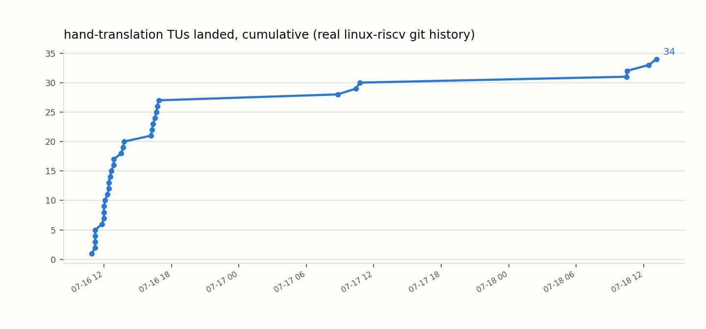
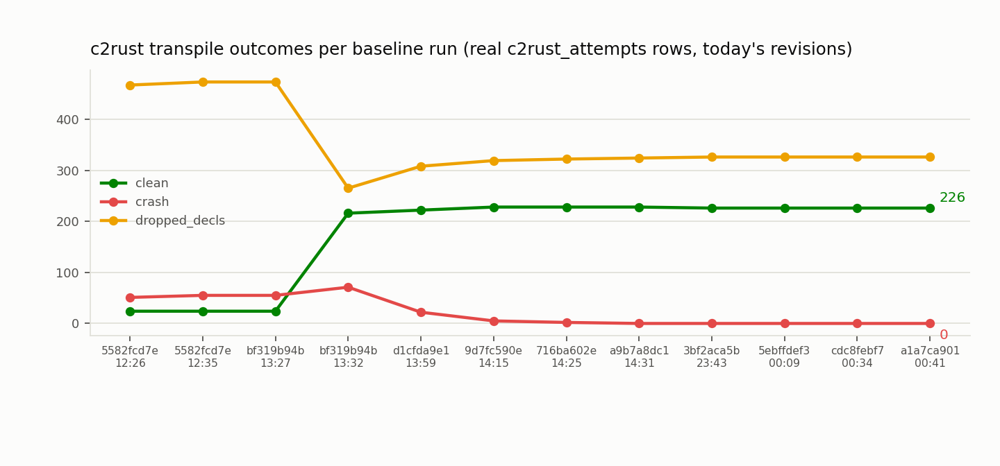

Generated 2026-07-18T18:47:18+10:00 by scripts/generate_dashboard.py from live queries against
rulesdb/patterns.db. See docs/STATUS.md for the full
hand-translation KUnit boot report; both tracks' progress-over-time charts, the two-track work
queue, and the awtoau/c2rust transpiler-fork issue timeline all live on this one page.
git worktree list at page-generation time)."Wired into live boot path" (stream 2, c2rust-boot-blocker in
docs/streams.md) is a stricter bar than "TU landed": it counts only
linux-riscv/**/*.c functions inside a real #ifdef CONFIG_RUST block whose
body calls a *_rs-suffixed Rust function at a pre-existing, live C call site —
not a standalone lib/ whole-file swap. Live regex scan of the current
linux-riscv/ tree, same detector STATUS.md uses
(scripts/report.py:boot_path_wiring_status()), re-run on every dashboard generation.
Live from the work_items_active view — open/in_progress/blocked items across the
hand-translation (kernel) and c2rust tracks, ranked P0 first, then boot-path-blocking,
then files-affected. Click any column header to sort/re-sort.
| Priority | Title | Track | Status | Blocks boot path | Files affected | Assigned to | Issue |
|---|---|---|---|---|---|---|---|
| P2 | 8250 driver Tier C — startup/shutdown/set_termios control flow (standing stream-2 target) | kernel | open | no | unassigned | awto-au/linux-rs#25 | |
| P3 | tmpfs-in-Rust — blocked on missing VFS abstractions, evaluate upstream RFC PR #1037 | kernel | open | no | unassigned | awto-au/linux-rs#4 | |
| P3 | KUnit-from-live-console (CONFIG_KUNIT_DEBUGFS) follow-up — deferred during console milestone, never done | kernel | open | no | unassigned | awto-au/linux-rs#13 | |
| P3 | boot_qemu.py has no durable stdin-piping feature — deferred during console milestone, only ever a manual one-off test | kernel | open | no | unassigned | awto-au/linux-rs#14 | |
| P4 | Concurrency scaling is sub-linear: 4x jobs (8->32) only buys ~1.5x wall-clock | c2rust | open | no | unassigned | awtoau/c2rust#2 | |
| P4 | Speedup investigation closed: neither PCH nor batching move wall-clock — bottleneck is Rust-side codegen (~82% of per-file time) | c2rust | open | no | unassigned | awtoau/c2rust#3 | |
| P4 | locate_comments() re-walks shared AST subtrees per top-level decl: O(N x subtree) blowup on files with large header closures | c2rust | open | no | unassigned | awtoau/c2rust#4 | |
| P4 | Known limitation: routine-run stability exclusion (linux-rs) can't detect idiom-rule content changes | c2rust | open | no | unassigned | awtoau/c2rust#5 | |
| P4 | Ollama hand-translation drafting parked with negative result — conditional revisit (raise context window) never tracked | kernel | open | no | unassigned | awto-au/linux-rs#17 | |
| P4 | Research: can Codex be a real GitHub assignee (not just a label)? | kernel | open | no | unassigned | awto-au/linux-rs#19 | |
| — | Progress: build/boot log | kernel | open | no | unassigned | awto-au/linux-rs#2 | |
| — | Design: Rust-side mechanism for _THIS_IP_/_RET_IP_ (raw instruction-pointer address, C-ABI-compatible) | kernel | open | no | unassigned | awto-au/linux-rs#27 | |
| — | Combined-image boot screening for rule-conformant c2rust output (tier-4 early signal, not final validation) | kernel | open | no | unassigned | awto-au/linux-rs#28 | |
| — | Raw output uses unstable features/idioms that don't survive a real kernel-embedded build (extern_types, missing unsafe{} blocks, .init_array trick) | c2rust | open | no | unassigned | awtoau/c2rust#20 |
All 12 issues filed against our fork (awtoau/c2rust, not upstream
immunant/c2rust). "Days open" is real elapsed time from created_at to
closed_at (or to now, for open issues) — a genuine time-in-flight metric per issue, not
per assignee (no worker-assignment tracking exists to query). Click headers to sort.
Both tracks' progress-over-time on one page — this replaces cross-referencing
STATUS.md's TU timeline separately from the c2rust chart below; both are real
queries against rulesdb/patterns.db, generated together.
Cumulative count from real linux-riscv git commit dates (same source as
STATUS.md's TU timeline) — 38 TUs landed total.

Real c2rust_attempts outcome counts, grouped by revision and run timestamp
— latest run (rev a660864e3, 2026-07-18T08:22:24): 552 clean / 0 crash / 0 dropped_decls out of 552 files. 38 distinct baseline runs recorded today across
22 c2rust revisions.

rulesdb/schema.sql) has no table or
column tracking LLM token usage or API cost anywhere — confirmed by grep, no match. No real token/cost
figure can be shown, and none is fabricated here.
tmp/*.log files, one per script invocation, and the
real run_at spread already recorded in c2rust_attempts. Today's baseline runs span
2026-07-17T12:26:20 to 2026-07-18T08:22:24 UTC
(38 runs). 77 script-invocation logs in tmp/, spanning 2 days, 9:38:14.377805 from 2026-07-16T09:09+10:00 to 2026-07-18T18:47+10:00
1 row(s) currently in progress_snapshots
(taken via scripts/take_progress_snapshot.py).
Only one snapshot exists so far — no trend to chart yet; the c2rust_attempts chart above is the real time-series available today.
2026-07-17T00:22:36.262775+00:00 — session baseline after DFExpr/asm-goto/attributed-stmt fixes, TU29 (kstrtox.c) — TUs 29, clean 84, crash None, dropped 20